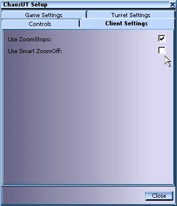
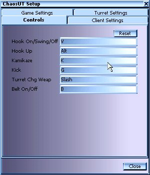
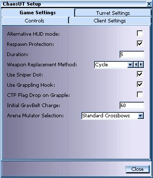

Configs
main
| introduction | installation
| configs | starting
chaos |
| the
weapons | features | koth
| server
setup | credits |

|
|
main
| introduction | installation
| configs | starting
chaos | |
|
** The ChaosUT Configuration Menu can be found under the UT Mod Menu **
| Client Settings : |
|
|
 |
Use ZoomStops - Check this box, and your scope will 'step' thru the various ranges. Just hit your alt fire like normal, but instead of UT's standard continuous zoom, your scope will stop at 1x, click it again to go to 3x, etc. Click thru them all to get out of zoom. Use Smart Zoom-Off - Only applies if ZoomStops are On. Check this box, and then if you stay at one range for more than a couple seconds, the next click will take you out of zoom, instead of going to the next range.
|
| Controls : |
|
|
 |
Hook On/Swing/Off -
Assign a key to be the main control for your grapple. One press
shoots grapple, and when it hooks something, it will begin to pull you to
that point. When you get there, press key again to be released.
However, if you hook something with your grapple, and press this key again while you're being pulled in, it will stop, and you can swing from your grapple's cable. While swinging, just hit key one more time to be released. Hook Up - When hanging or swinging from your grapple, the weight of your body will cause you to slowly be lowered toward the ground. Press the key assigned here to be pulled back up the cable. Kamikaze - You need 10 rockets minimum before Kamikaze will work. In addition, the more rockets you have, the bigger the boom! Kick - Kick! Just what it says. Bind a key for kicking things. Turret Change Weapon - Turrets use 2 types of ammo. Pressing this key will force all your active turrets to switch to the other weapon type, whichever one that might be. Belt On/Off - Just what it says. Turns your GravBelt on and off.
|
|
Game Settings : |
|
|  |
Alternative HUD mode - Toggle this option if you have trouble with parts of the ChaosUT HUD not showing up when used with other mods. Or if you have trouble with the HUD's from other mods not showing up when you play them with ChaosUT. Respawn Protection - This provides you with temporary invulnerability when you respawn. This will help you avoid spawn campers and stand a chance to find a gun. Duration - This is the amount of time that the Respawn Protection will last. Weapon Replacement Method - This will allow you to modify the way CUT weapons will appear in the game.
Sniper Dot - Sniper dot is where you will get a dot that will show you where your aiming with the sniper rifle. Think of it as a laser sight. Use Grapple Hook - This will enable the famous Chaos grappling hook, which allows you to move about the map much easier. Highly recommended.CTF Flag Drop on Grapple - This will cause flag carriers to drop the flag if they try to use the grappling hook. Initial GravBelt Charge - The number of seconds the GravBelt will last after you pick it up. Arena Mutator Selection - When using the ChaosUT Arena Mutator, the weapon selected in this menu will replace all other weapons in the map. |
|
Turret Settings : |
|

|
Empty Turret Duration (min 30) -
The amount of time a turret will remain after it runs out of ammo. If it
has not been reloaded before time is up, it will self destruct.
Turret Starting Energy Ammo - This is amount of energy the Turret has when it is beamed in. Turret Max Energy Ammo - This is the maximum amount of energy ammo a turret can have. Turret Starting Rocket Ammo - This is amount of Rockets the Turret has when it is beamed in. Turret Max Rocket Ammo - This is the maximum amount of rocket ammo a turret can have. Max Active Turrets - This is the maximum number of turrets allowed to be active at the same time, regardless of who owns them. |
** The following list of key binds is provided as a convenience for users comfortable with editing their user.ini file. This provides players with greater control over weapons and actions. However, this is optional, and is not required before playing. **
|
Key Bindings : |
|
For news about future updates & new features, bug fixes, discussion board and everything else you want to know about ChaoticDreams don’t forget to check out our ChaosUT home-site at: http://dynamic4.gamespy.com/~chaotic/index.php
|
main
| introduction
| installation
| configs | starting
chaos | |
c'2002 Chaotic Dreams